Kuratowskische Hüllenaxiome
1. Satz / Definition
Ein topologischer Raum ist ein Tupel 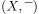 bestehend aus einer Menge  und einer Abbildung
und einer Abbildung  , so dass gilt:
, so dass gilt:
- 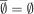
- 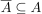

- 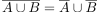 für

Wir nennen ferner eine Menge  abgeschlossen, g.d.w. 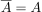 gilt.
abgeschlossen, g.d.w. 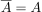 gilt.
2. Beweis
2.1. Topologie  Hüllenaxiome
Hüllenaxiome
2.2. Hüllenaxiome Topologie
wir verwenden die äquivalente Axiome für abgeschlossene Mengen
2.2.1. triviale mengen
Nach Annahme gilt und 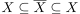 und damit  .
d.h. 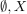 sind abgeschlossen
.
d.h. 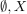 sind abgeschlossen
 , der allgemeine fall folgt durch
, der allgemeine fall folgt durch  gegeben mit 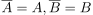, dann folgt:
gegeben mit 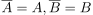, dann folgt: